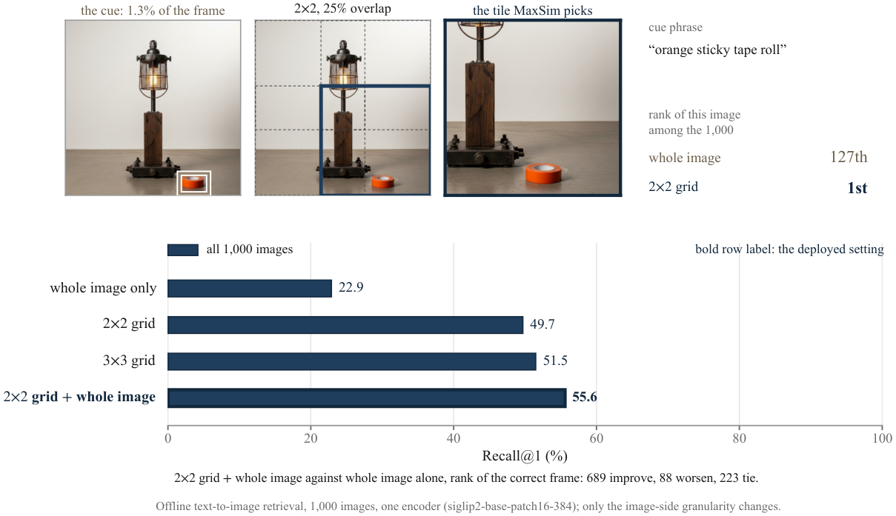
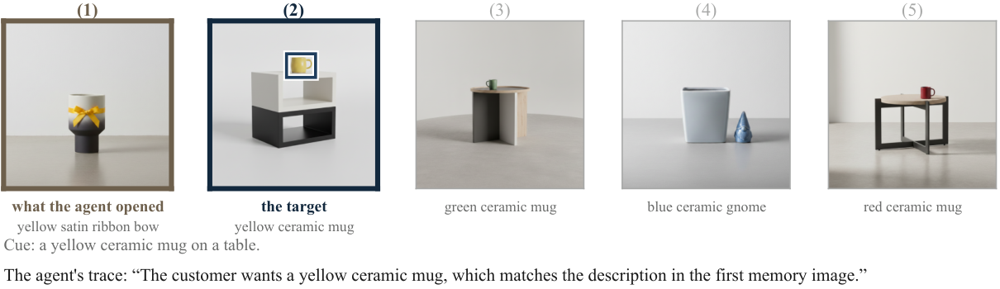

Multimodal Memory Delivery for Long-Term Agents
Huawei Technologies Ltd.
*Corresponding author, jyhtjtj@gmail.com. Work done during a research internship at Huawei Pisa Research Center.
Work on memory for multimodal agents optimizes what is written, updated and retrieved. Between retrieval and the answer, however, is a stage that multimodal memory evaluations do not isolate: what of the retrieved memory reaches the model, and in what form. We call it delivery, and a controlled decomposition on MemLens locates the remaining room there. With the retrieved evidence set exactly fixed, delivering the original pixels instead of withholding them raises accuracy by 13.87 points on an 8B backbone, whereas making retrieval perfect on those same messages improves it by 2.31. Delivery is the larger term on all three MemLens backbones and grows with backbone strength; retrieval grows too, without closing the gap. We propose DeliverMem, an instantiation of delivery as three decisions: keep the original modality, give each item a readable identity, and state when it was seen, with a retrieval-side adapter for the one property delivery cannot supply. Each is measured against a delivery-matched control that alters only its own variable. DeliverMem leads the strongest published memory agent on MemLens at all four context lengths, and beats DMV-Bench's own strongest method at every setting on both backbones. On MemLens it does this on a tenth to a seventieth of the input. Each decision helps only where the question lacks what it supplies, and is null elsewhere. A single fixed configuration nonetheless leads both benchmarks, without training any component or modifying the stored records.
A user testing a citrus-cured salmon recipe sends their AI assistant a photograph. Later comes a question about it. Nothing the user wrote mentions the answer; the photograph shows it. The exchange is from MemLens, a benchmark of questions about long multimodal conversations. Retrieval finds the message and places it in the prompt. Switch what reaches the model.
Same retrieved message, same text, same model and judge; only the delivery differs. Of the 31 questions the pixels fix, 10 fail the way this one does when the pixels are withheld: a confident wrong answer, not a refusal.
On MemLens (32K, 173 non-refusal questions) we vary one argument at a time from the same corner, where retrieval is perfect and the pixels are delivered. Both quantities start from what systems do today, text-only delivery and a query-conditioned retriever, and only retrieval runs all the way to a ceiling. Hover a quantity.
Same questions, retrieval index, K and judge; only the answering model changes.
The gap between the two terms separates at 8B (p=0.0078) and keeps its sign on the two larger models without separating at n=173 (p=0.18 and 0.14).
A memory system writes experience to a store, a retriever returns a small set of records per query, and the answering model conditions on them. Between the last two is a step that turns retrieved records into the tokens and pixels placed in the prompt.
The failures we audited lack three properties: the model has to be able to inspect what a memory contains, to address one item among those delivered, and to situate it in time. Each decision is measured against a delivery-matched control that alters only its own variable.
The tag is written into the delivered copy after the embeddings, so it costs no re-embedding and leaves the stored record untouched. The date comes from the store's own timestamp.
Each recalled item carries its own tag (M1, M2, ...). The tag gives the relevance rank: M1 is the most relevant, M2 the next, and so on. Identify a memory by its tag, not by counting items. [2024/05/11 (Sat) 19:33] Trying to get this recipe write-up done before I crash tonight. I took a photo while I was testing my citrus-cured salmon and ... <the stored photograph, with M1 stamped in its top-left corner>
Withholding the pixels also removes image tokens. A ladder of counterfactual images keeps an identical set of image slots and changes only what the pixels carry. Each tile shows the points lost against the correct image. Pick one.
MemLens rows pair questions; DMV-Bench rows count chains agreeing in sign.
A delivery decision helps where three conditions hold, and is null otherwise. Every null we measure is one of them failing, and no decision measured on both benchmarks is positive on both.
The information survives storage and reaches the model.
The question needs the property the decision supplies.
The delivered context does not already carry it.
A DMV-Bench question asks which of several retrieved frames contains the cue. A name for each frame answers it directly, and an ordinal adds nothing. A MemLens temporal question asks when something happened: it needs the date, and a name for each item does not supply one.
The retrieval adapter targets a small image region, and only DMV-Bench is built that way: its cue occupies a median 1.7% of the frame. On the right, one cued frame ranks 127th of 1,000 under the whole-image encoding and first under the 2×2 encoding.

One configuration, applied to every question with no selection. All seven published memory agents on MemLens run on 8B parameters or fewer; on DMV-Bench the reference is the benchmark's own strongest method.
Accuracy by context length (canonical 195 questions, benchmark judge).
Task success rate as the number of sessions in memory grows.
What we deliver barely moves as the conversation grows, 2,405 to 2,450 tokens across a 7.4× increase. Against the same backbone reading the entire conversation we are ahead by 0.51 at 32K and by 7.69 at 128K, and behind by 3.59 at 64K.
On DMV-Bench with Qwen2.5-VL-7B, 98% of our failures picked a neighbour while the correct item was in context, and in 94% of those the agent's own reasoning trace names the target correctly. The errors are attributions to the wrong item in context, and (D2) gives each item a readable name.

@misc{jiang2026retrieveddeliveredmultimodalmemory,
title={Retrieved but Not Delivered: Multimodal Memory Delivery for Long-Term Agents},
author={Yuhang Jiang and Qingwei Liao and Kaize Yin and
Xingling Liu and Luca Cuomo and Silvio Bacci},
year={2026},
eprint={2609.32590},
archivePrefix={arXiv},
primaryClass={cs.CV},
url={https://arxiv.org/abs/2609.32590},
}